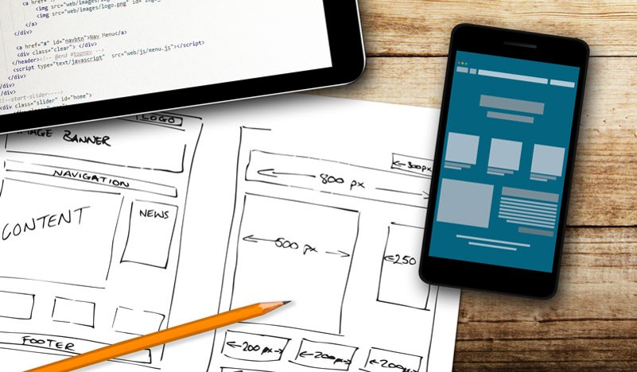

Техническое задание представляет собой результат проектирования сайта, где прописаны требования и пожелания заказчиков, определены цели и задачи проекта.
Начинается работа с создания дизайна, обычно в графическом редакторе.
Дизайнер создаёт один или несколько вариантов дизайна, в соответствии с техническим заданием. При этом отдельно создаётся дизайн главной страницы, и дизайны типовых страниц.
При этом дизайнер должен учитывать ограничения стандартов (не создавать дизайн, который затем не сможет быть реализован).
Количество эскизов и порядок их предоставления оговаривается с проект-менеджером. Также менеджер проекта осуществляет контроль сроков. В больших веб-студиях в процессе участвует арт-директор, который контролирует качество графики.
Этап заканчивается утверждением эскиза заказчиком.
Вёрстка веб-страниц — создание структуры гипертекстового документа на основе HTML разметки, как правило, при использовании таблиц стилей и клиентских сценариев, таким образом, чтобы элементы дизайна выглядели аналогично макету.
Процесс сложен и имеет творческую основу, ни один из способов не является каноничным и принятым как основа. Все подходы к вёрстке имеют как преимущества, так и недостатки.

Программирование – это объединение дизайна сайта с его функциональной частью. Процесс программирования сайтов включает в себя установку системы управления сайтом и внедрение функциональных модулей.
Процесс тестирования может включать в себя самые разнообразные проверки.
Обнаруженные ошибки отправляются на исправление до тех пор, пока не будут устранены.
Файлы сайта размещают на сервере, производят нужные настройки.